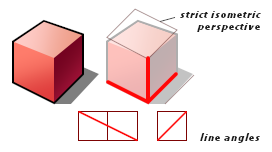
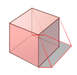

Haiku Icon Guidelines
This document explains the artistic subtleties of Haiku icons. If it leaves something unclear to you, that is, what rules to follow when designing an icon for the Haiku operating system, please bring the issue to our attention. Existing icons should give you a pretty good idea what directions to follow. This document is meant to define the distinctive look in further detail and to be a useful resource in case of doubt. Also, this document will hopefully provide you with help on what you should change if you have designed an icon and feel it doesn't seamlessly fit in with the rest of the system.
Please be aware that Haiku users feel very strongly about a consistent look. The more you make your icon fit into the rest of the system, the more it is appreciated by your users.
Perspective
Haiku icons inherit the perspective of the BeOS icons and add some of their own. If a cube were sitting on the floor, the angles of its edges would be defined as follows: the line where the left front side and the floor meet would have an angle such that for every two pixels it goes to the right, it goes one pixel down, and the line of the right side meeting the floor goes one pixel up for every pixel going right. Vertical lines are straight without any angle to help make the icons crisper (realistically, icons should be wider at the top but they aren't).

The change in perspective that Haiku icons add to the original BeOS look comes from changing non-vertical lines that do not touch the floor to add a somewhat more dramatic perspective. Edges coming from the corners closest to the viewer and on the floor still follow the isometric BeOS perspective with the angles described above, all other edges are slightly tweaked to break free of the strict isometric look. The most important thing is still crispness, that's why there is no strictly defined perspective. Don't exaggerate too much -- try to make it fit with the rest of the icons. It is sometimes easiest to first design an icon with an isometric look and modify for perspective as the last step of work. Keeping the perspective consistent and correct-looking throughout the icon is also desirable.
Lighting
There are two light sources illuminating a Haiku icon. The main light source casts a bright neutral light from the top left. A second light source shines from the opposite side with an ambient light that can be slightly colored (for example, a warmer tone). Its effects are not seen on surfaces the main light source directly shines upon.
Gradients
Gradients used on the icon should result from the effects of the lightsources as described above. You do not need to use gradients on every surface -- they obviously use more storage space than solid colors, but without gradients, icons would look too stiff. You should use enough of them to give your icon a modern look.
As a general rule, surfaces facing towards the viewer should be lighter at the top and the top surfaces should be lighter on the left side. Surfaces on the right which are not directly lit by the main light source should get the darkest colors. They are lit from the ambient lightsource and from the reflection of the floor, but the effects should be very subtle and only seen on closer examination. These surfaces get the darkest colors where they touch the directly lit surfaces. Overall, colors should be bright and tweaked to help the contrast within the icon. Gradient directions don't have to line up with a specific angle to make icons look less stiff. Instead, you should tweak the gradient directions to help improve contrast.
Colors
Colors are obviously a tough subject.
 At the moment, there is no color palette defined from which you should pick the dominant colors of your icon. In the existing icons, clean colors are almost completely avoided, with the exception of grays, which are not toned in any way. Most dominant colors appear quite saturated somewhere in the icon, but the colors are always a mixture, never pure red, green, or blue. Where they fade into a lighter tone, they are mostly desaturated and pastel-like. In the shade, the colors are mostly still saturated, aiming for believable lighting, but colors can vary in tone to give the appearance of a warmer or colder light condition in the shadow, which mostly depends on the overall coloring of the icon and gut feeling.
At the moment, there is no color palette defined from which you should pick the dominant colors of your icon. In the existing icons, clean colors are almost completely avoided, with the exception of grays, which are not toned in any way. Most dominant colors appear quite saturated somewhere in the icon, but the colors are always a mixture, never pure red, green, or blue. Where they fade into a lighter tone, they are mostly desaturated and pastel-like. In the shade, the colors are mostly still saturated, aiming for believable lighting, but colors can vary in tone to give the appearance of a warmer or colder light condition in the shadow, which mostly depends on the overall coloring of the icon and gut feeling.
Shadows

First of all, a shadow is the projection of a body's silhouette as seen from the light source. Cast onto the flat floor, the shadow is subject to further distortion because of the viewer's perspective.
Self-shadowing on the icon objects is encouraged, because it can improve contrast. Sometimes gradients work well for these. A naturalistic shadow is preferable unless it gets too complicated and would distract from the main icon. The people icon is one example for a simplified shadow shape. Avoid making shadows that are cut off at the right edge of the icon by leaving enough room for them. It is not so important that the shadows have approximately the same length throughout all icons, but they all need to be the same direction: straight to the right. Just like shadows created by the sun, they also do not become wider with more distance from the object.
Each of the four icons shown above has something interesting to be said about their shadows:
-
In the Fonts icon, the shadow does not have straight horizontal lines, but this is because the A shape doesn't have edges pointing straight up. The direction of the shadow is still towards the right.
-
The Person icon's shadow is simplified with the help of curves.
-
The shadow in the ShowImage icon is lower than the body of the projector, but this is because it is lifted off the ground.
-
The Expander icon features more self-shadowing effects than the other icons. Note that the shadow on the right side follows a different direction because it is cast by the ambient light source. It could also have been realized with a gradient because such shadows usually don't have sharp edges.
Outlines
Haiku icons use a main black outline at least around the silhouette of the icon's shape. The outline is 1 pixel wide at 32x32 size. While outlines can separate shapes within the icon if they overlap each other, use them sparingly. If every edge gets one, the icon will look too complicated. Compared to those from BeOS, Haiku icons use fewer outlines. The Magnify icon is a good example of this.
 Outlines help emphasize the silhouette of an object, so skip outlines that would work against this idea. If a certain feature of an icon should not have as much emphasis as much as a black outline would give, such outlines can be darker versions of the color used for the surface they enclose. Examples of this would be the Folder and the Workspaces icons. In the Workspaces icon, the foot of the lamp is too small to justify a black outline; in the Folder icon, the paper sheets should appear thin.
Outlines help emphasize the silhouette of an object, so skip outlines that would work against this idea. If a certain feature of an icon should not have as much emphasis as much as a black outline would give, such outlines can be darker versions of the color used for the surface they enclose. Examples of this would be the Folder and the Workspaces icons. In the Workspaces icon, the foot of the lamp is too small to justify a black outline; in the Folder icon, the paper sheets should appear thin.
Glossy effects and highlights should be used with care. If applied too often, an icon will lose it's simplified, stylish look. Some icons use highlight effects on metallic or glass surfaces, but usually only if the surface is curved (round or spherical). In these cases, the material itself supports the meaning of the icon in an important way. The use of gradients should usually provide enough room to make an icon look vivid.
Overlays
Some of the system icons use overlays to further differentiate between file system objects for the user's benefit. These objects are generally the same type and get the same base icon. A good example are the many standard folders. Since the overlays need to be reasonably clear at 16x16 icon size, they need to be flat symbols, much like labels. 3D objects are too blurry at such a small size. If you look closely, you will probably notice that overlays don't have exactly the same size or even position with all icons that use them. Instead, they are arranged to overlap in such a way that lines with similar angles don't merge. Another good use of overlays is where they immediately provide some additional information, perhaps about a particular subtype of a file format. If it is possible to implement the overlay with an object rather than a text label, please do so.
You might be tempted to just copy and paste a graphic from somewhere else to use as the overlay, but please remove any unnecessary detail for the final icon.
|
|
Details
Usually, you should avoid any detail not strictly necessary to help the meaning of an icon. There should be just enough detail to make the icon look interesting. Icons are usually viewed at 32x32 or 16x16 size. With regards to the amount of detail, you should optimize for the 32x32 size. There should not be any detail that is not well seen at this size. When reusing existing vector material in an icon, make sure its details are reduced to what can actually be seen at the icon size, otherwise the icon will waste a lot of storage space and rendering time. Sometimes it is helpful to make some details of the icon disappear at the small sizes, with the help of the Min and Max LOD property in Icon-O-Matic.
Neutral Icons
 Your work will likely be seen and used by people from all sorts of cultural and ethnic backgrounds. In order to avoid any stereotypes that could be potentially offensive to others, as a general rule, all Haiku icons are designed to be culturally and ethnically neutral. We encourage icon designers to follow this guideline whenever creating icons for Haiku.
Your work will likely be seen and used by people from all sorts of cultural and ethnic backgrounds. In order to avoid any stereotypes that could be potentially offensive to others, as a general rule, all Haiku icons are designed to be culturally and ethnically neutral. We encourage icon designers to follow this guideline whenever creating icons for Haiku.